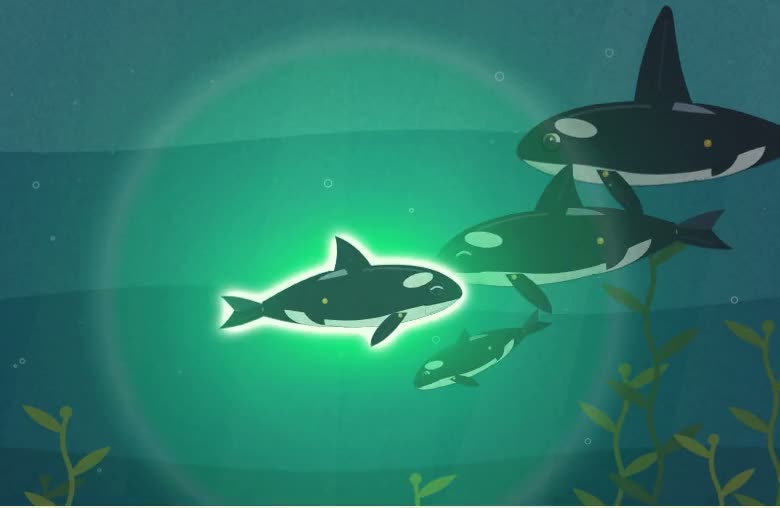
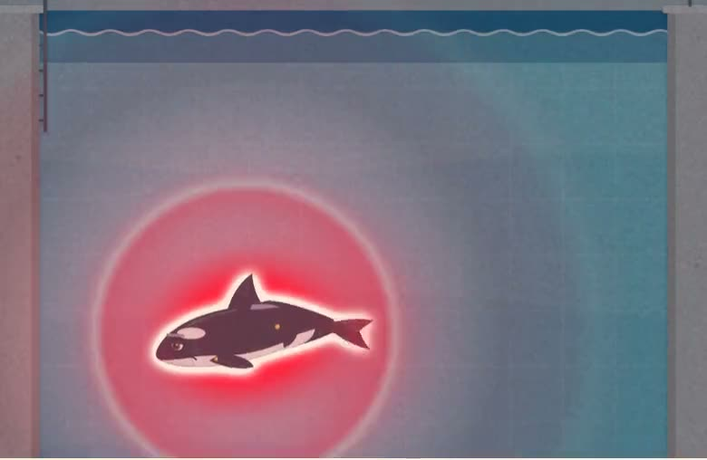
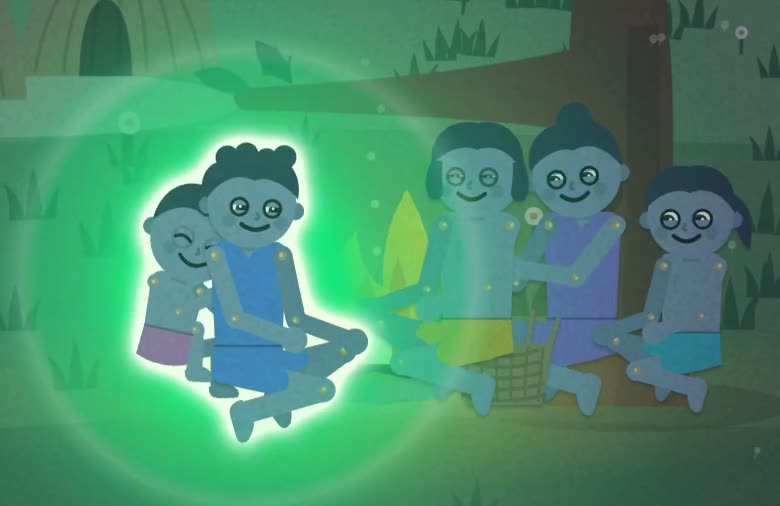
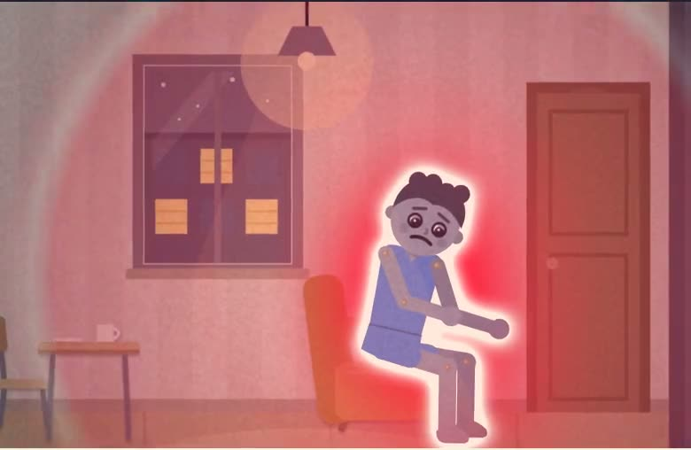

Part 1, a cut card, part 2, and round again, all in one frame. The two bars on top show which part is on. Tap the picture to jump to the other part.
It is hard to see in yourself. It is easy to see in an orca.


Nobody thinks the orca is the problem.
Humans are animals too. The same thing is happening to you.


A feeling makes you act. You act, the world answers, and the feeling changes. That is a closed loop.
In the tank and in the flat no answer comes, so the feeling never stops. That is an open loop.